안내·처음 추가·일정 순차 등장 수정
알림은 기존 토스트를 사용하고, 맨 위 추가는 첫 일정 앞에 표시합니다. 질문 뒤 첫 지도는 일정과 마커를 순서대로 보여 주며 읽기 진행은 완료 상태를 유지합니다.
실제 Chrome 촬영·mock 서버 화면 반응 확인입니다. 지도 타일은 시험용 색상이며 공개 cs 프로젝트 서버 응답·x600 서버 배포는 확인하지 않았습니다.
375px 실제 Chrome
안내는 공통 토스트
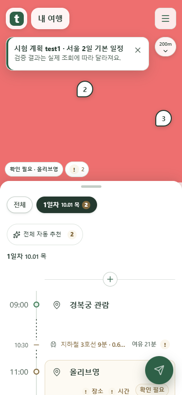
첫 일정 앞에 추가
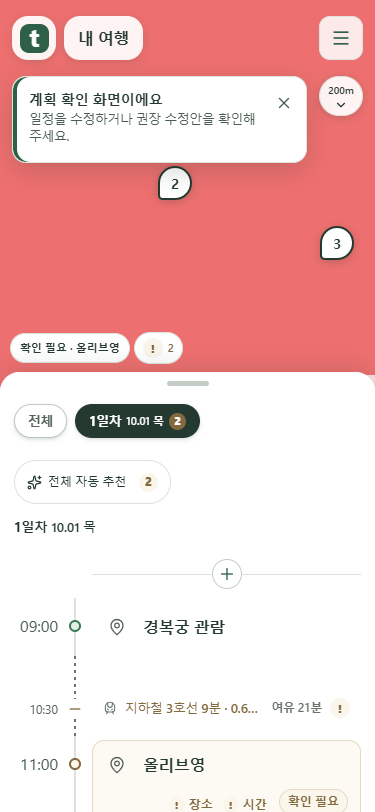
완료 표시를 유지하며 순차 등장
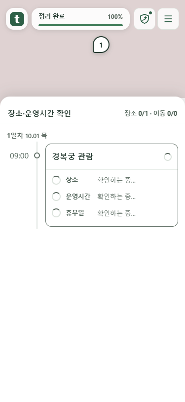
자동 재생하지 않습니다. 질문에서 나온 뒤 일정과 마커가 하나씩 나타납니다.
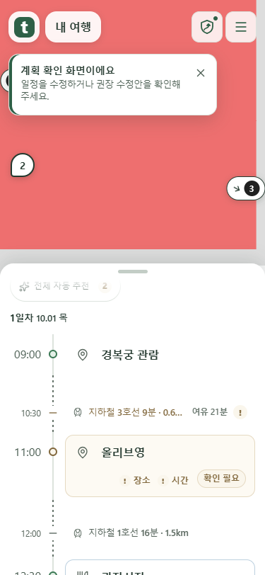
문제 항목과 상태를 한 묶음으로 · 375px
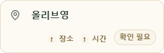
항목이 많을 때
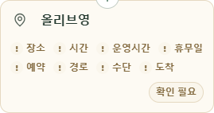
1280px 실제 Chrome
안내는 공통 토스트
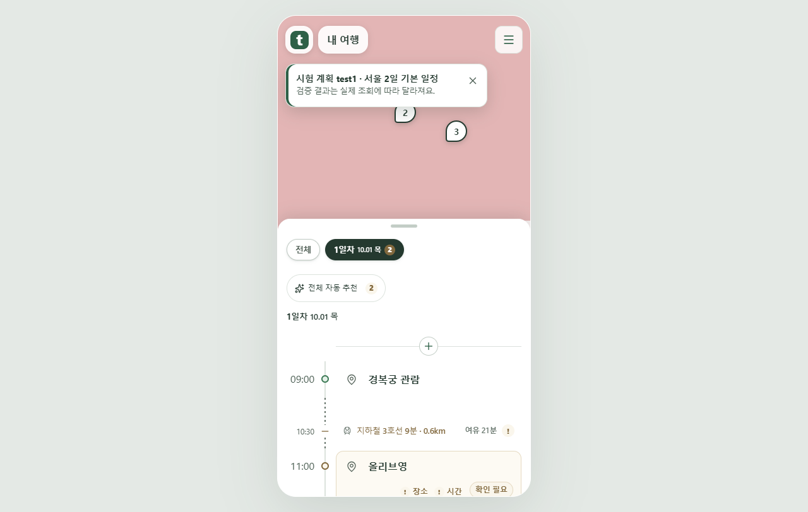
첫 일정 앞에 추가
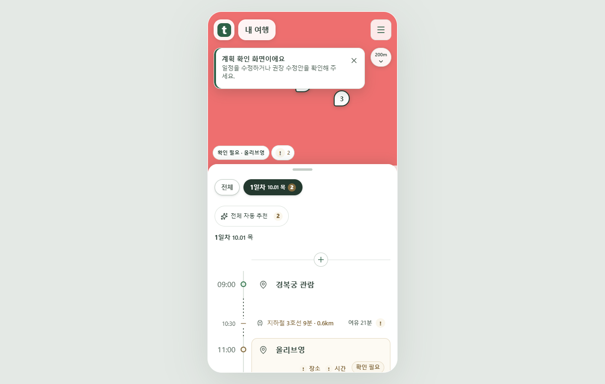
완료 표시를 유지하며 순차 등장
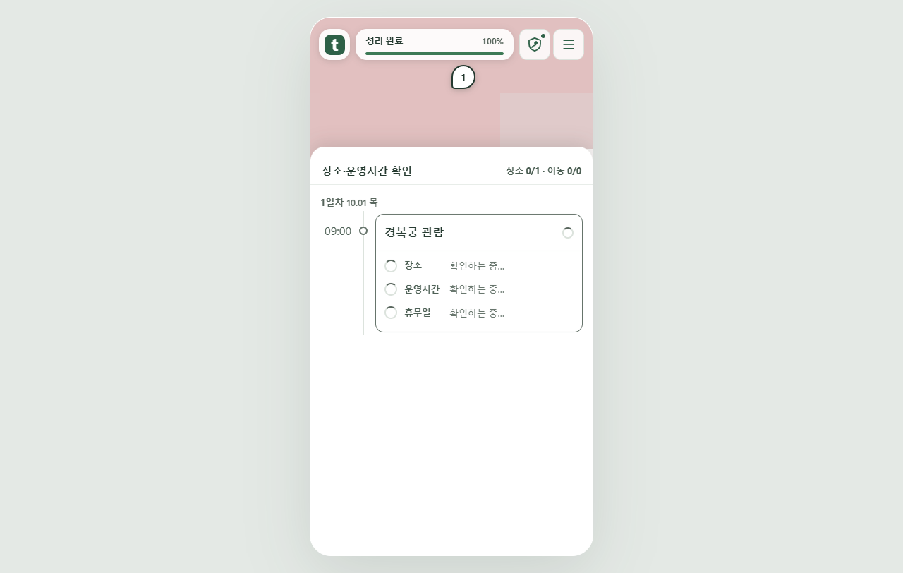
자동 재생하지 않습니다. 질문에서 나온 뒤 일정과 마커가 하나씩 나타납니다.
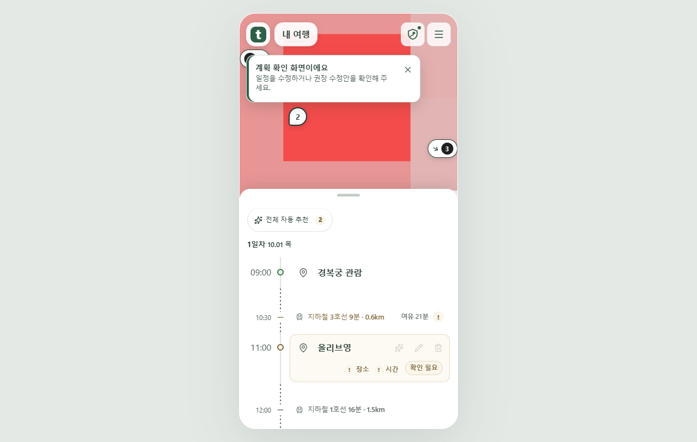
문제 항목과 상태를 한 묶음으로 · 1280px
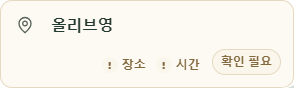
항목이 많을 때
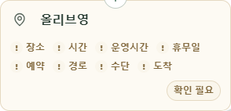